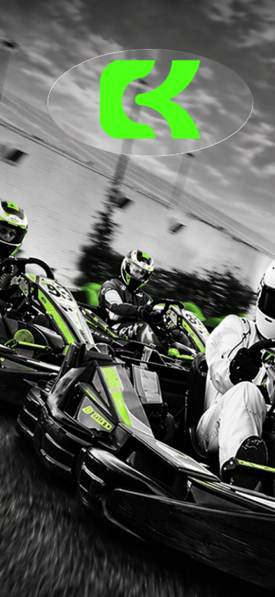
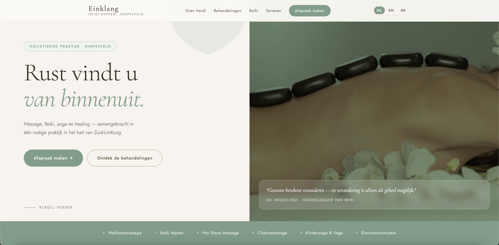
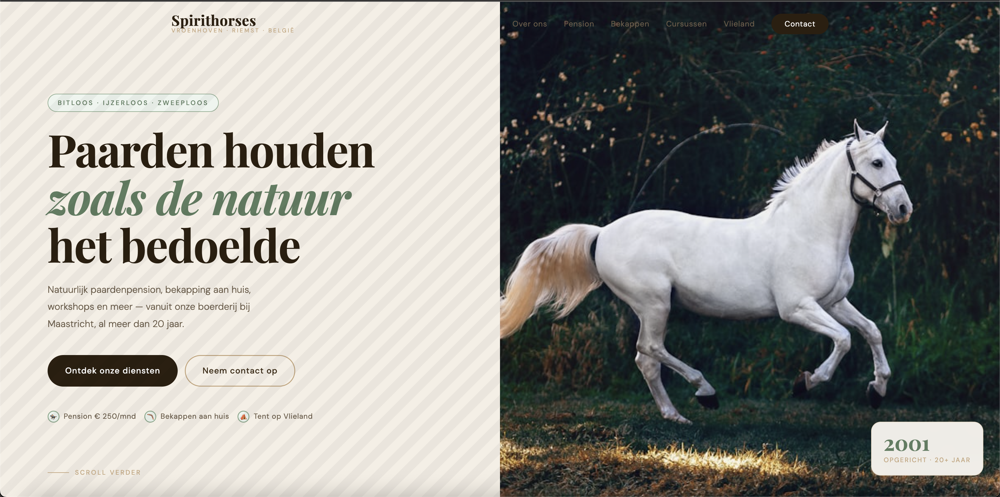
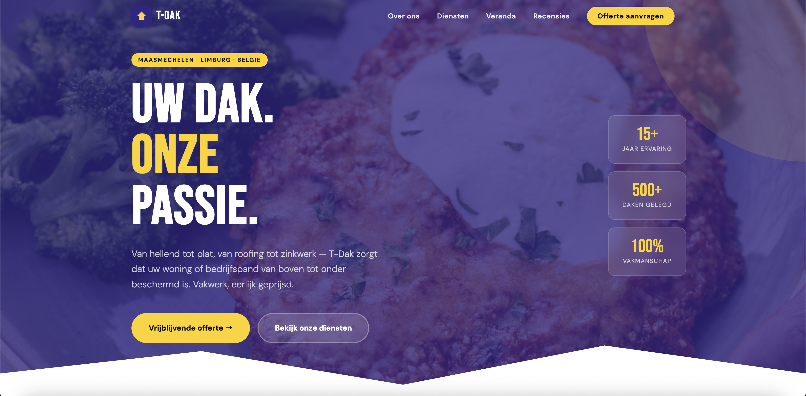
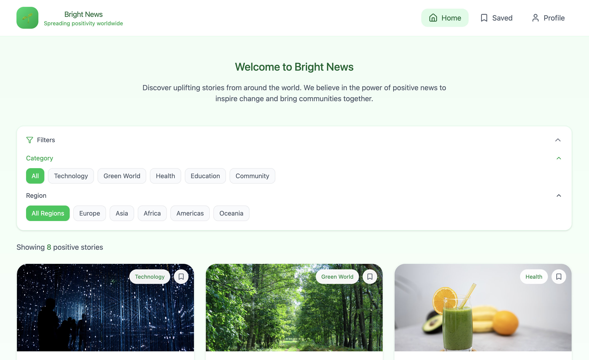
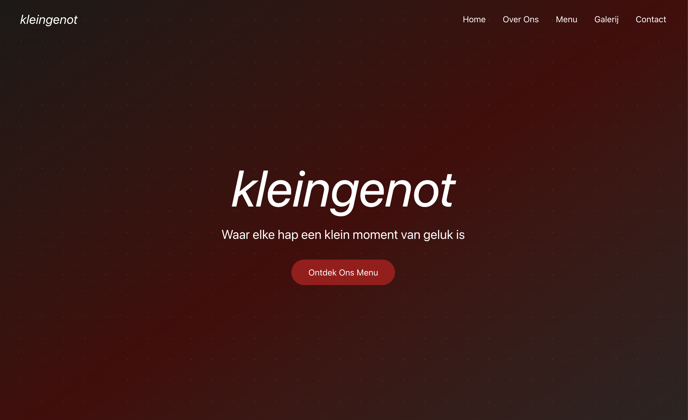
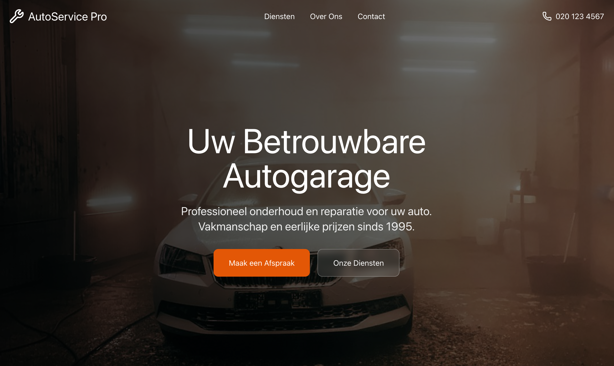
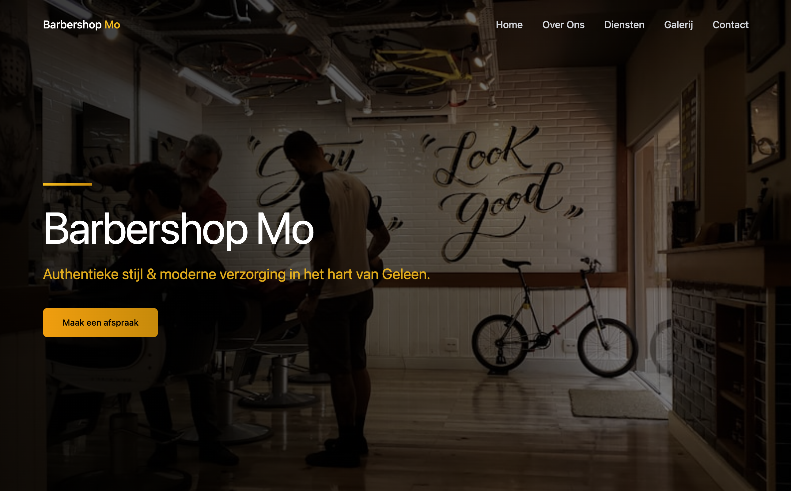

My Portfolio
Discover my full collection of projects, filtered by expertise and timeline.

Campus Karting App
Digital partner for race days featuring live rankings and a digital ticket wallet.

Campus Karting Website
Promotional platform for the Student League tournament between universities.

Einklang
An atmospheric and harmonious website for a wellness or sound therapy studio where peace and balance are key.

IBE Motion
A creative and visual portfolio platform for a motion designer, specifically tailored to seamlessly showcase After Effects video projects and animations.

Spirithorses
An intuitive and natural website for equine coaching that instantly fosters a sense of connection and trust.

T-Dakwerken
A clean and reliable website for a roofing company that projects pure craftsmanship and technical expertise.

BrightNews
A news portal with a fresh, clear and positive appearance.

Klein Genot
Website design focused on creating a unique, atmospheric experience.

Autogarage
A highly functional design aimed at maximizing user conversion and service accessibility.

BarberMo
A trendy website design for a barbershop with a strong eye for detail.